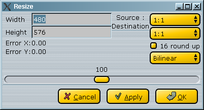

|
Video: filtry pro úpravu obrazu 1.Pøedmluva Tato sada filtrù výraznì mìní zdrojový obraz: zmìna velikosti, rotace, pøevrácení a oøez. 2.Filtry pro úpravu obrazu Provede oøez obrazu (napøíklad k odstranìní èerných pruhù). Hodnoty musí být sudé. Oøíznuté èásti se znázorní po stisku tlaèítka Apply. Na èistém obraze (DVD) mù¾ete zkusit Autocrop. Na za¹umìném obraze (TV nahrávka) to nebude fungovat moc dobøe. 
Resize je port filtru z AviSynthu do YV12. MPlayer resize je port filtru Michaela Niedermayera, který se pou¾ívá v MPlayeru. AviSynth Resize je o nìco pøesnìj¹í, ale MPlayer resize je 3x rychlej¹í bez postøehnutelného rozdílu. Konfiguraèní dialog je stejný pro oba filtry:  Mù¾ete pøímo zadat novou vý¹ku a ¹íøku a algoritmus pøevzorkování, nebo pou¾ít posuvník. K dispozici jsou tøi metody interpolace: Je to dùle¾ité, proto¾e 4:3 nemá ètvercové pixely (rozdílné u PAL a NTSC) a pokud dìláte pøevod 1:1->1:1, bude výsledný obraz zkreslený. Nahradí okraje obrazu èistou èernou. Mù¾e být u¾iteèný k vyèi¹tìní èerných okrajù (napø. u VHS nahrávky). Tento filtr *pøidá* èerné okraje (pøedchozí je nahradí). Internì je pou¾íván metafiltry *VCD res ke zmìnì velikosti bez zmìny pomìru stran. Vertikálnì pøetoèí video. Hodí se napøíklad pro nahrávky z nìkterých TV karet. Tento filtr napsal Tracy (viz soubor pro dal¹í informace). Otoèí video o 90/180/270 stupòù. Autor jej pou¾ívá pro video ze své kamery v otoèené pozici.
|